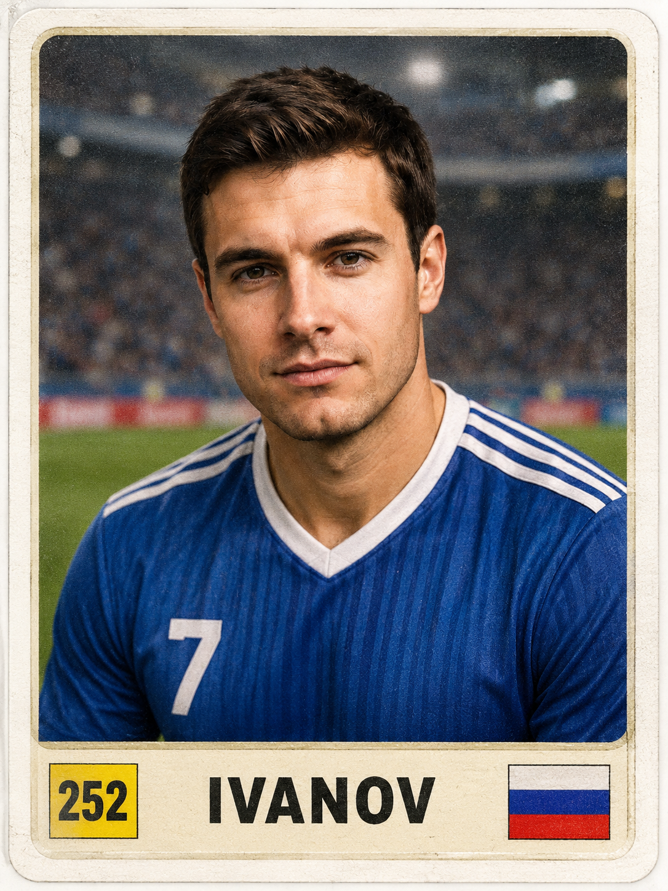
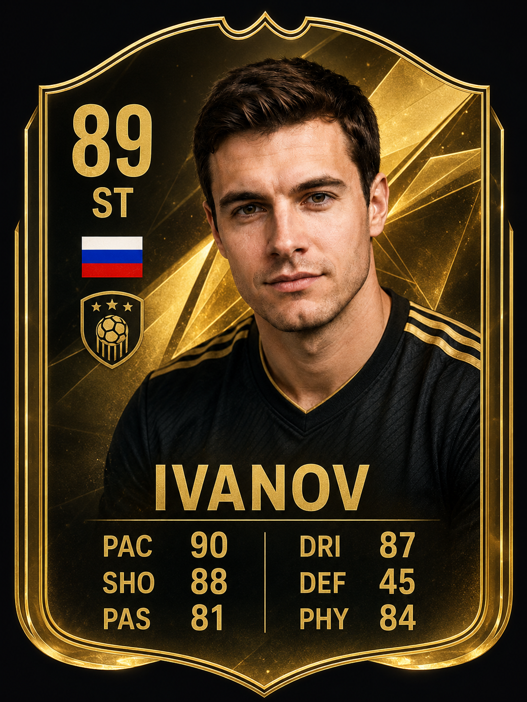
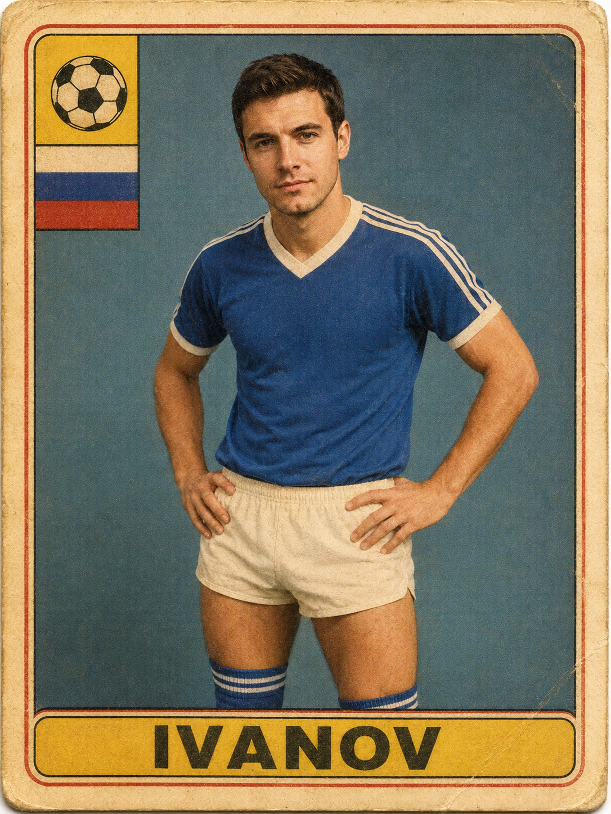
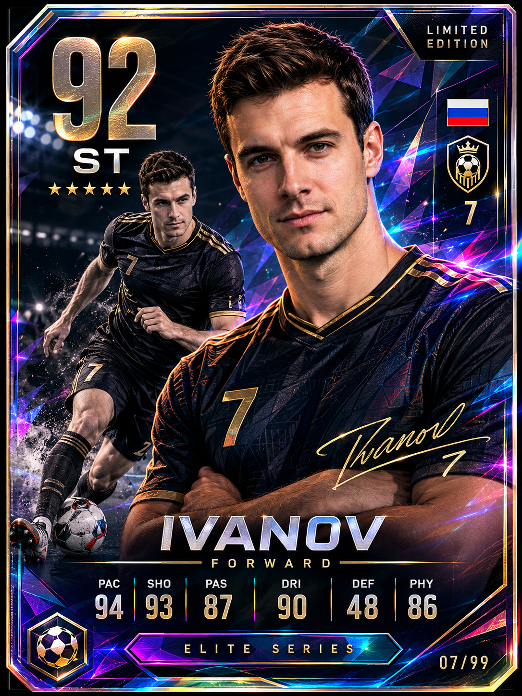
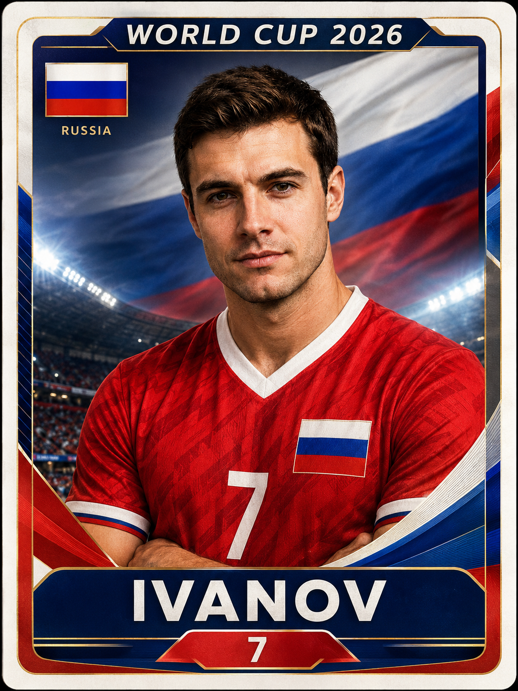

Промтзилла
Как сделать карточку футболиста с помощью нейросети
5 готовых промтов для генерации коллекционной карточки футболиста через ИИ — от стикера Панини до голографической премиум-карточки.
📋 Пошаговая инструкция
- 1Перейди на study24.ai и открой инструмент Nano Banana PRO
- 2Нажми на иконку скрепки и загрузи своё фото — подойдёт портрет анфас с нейтральным фоном
- 3Скопируй промт ниже, замени ИВАНОВ на свою фамилию и вставь в поле ввода
- 4Нажми отправить и подожди 15–30 секунд — нейросеть сгенерирует карточку
- 5Если лицо изменилось — добавь к промту: «сохрани лицо с фото точно»
- 6Скачай результат и поделись в соцсетях
Промт 1 — Карточка Панини
RU
Загружаю фото человека. Преврати его в коллекционный стикер альбома Панини. Стиль: классический альбомный стикер Панини, формат 3:4. Рамка: белая или кремовая с тиснением, характерная для стикеров Панини. Портрет: человек в футбольной форме, анфас или три четверти. Внизу карточки: имя игрока заглавными буквами — ИВАНОВ (замени на свою фамилию), номер стикера, небольшой флаг страны. Фон за игроком: размытый стадион или цвет клуба. Текстура: лёгкая бумажная текстура, имитация печати, края стикера слегка закруглены. Лицо человека сохранить точно — не изменять внешность. Без реальных логотипов клубов и брендов.
ДоИсходное фото

ПослеСтикер Панини
EN
I'm uploading a photo of a person. Transform it into a Panini collectible album sticker. Style: classic Panini football album sticker, 3:4 format. Frame: white or cream with embossed border typical of Panini stickers. Portrait: person in football kit, front-facing or three-quarter view. Bottom of card: player name in capitals — IVANOV (replace with your name), sticker number, small country flag. Background: blurred stadium or club color behind the player. Texture: subtle paper texture, print simulation, slightly rounded sticker edges. Preserve the person's face exactly — do not alter appearance. No real club logos or brand trademarks.
Промт 2 — Карточка FIFA / FC26
RU
Загружаю фото человека. Создай игровую карточку футболиста в стиле FIFA Ultimate Team / FC26. Формат: вертикальная карточка 3:4, золотая рамка (редкая карточка). Верх карточки: общий рейтинг игрока (число 85–99) крупно слева, позиция (ST / CAM / CB — на выбор), флаг страны и иконка клуба (без реальных логотипов). Центр: портрет игрока в динамичной позе или анфас на тёмном фоне. Низ карточки: имя — ИВАНОВ (замени на свою фамилию), шесть характеристик в два столбца: PAC, SHO, PAS слева — DRI, DEF, PHY справа, каждая с числом 70–99. Стиль: золотой градиент, глянец, чёткая типографика. Лицо человека сохранить точно — не изменять внешность. Без реальных логотипов FIFA, EA, клубов.
ДоИсходное фото

ПослеКарточка FIFA
EN
I'm uploading a photo of a person. Create a football player card in FIFA Ultimate Team / FC26 style. Format: vertical card 3:4, gold frame (rare card tier). Top of card: overall rating (85–99) large on the left, position (ST / CAM / CB — model's choice), country flag and club icon (no real logos). Center: player portrait in dynamic pose or front-facing on dark background. Bottom of card: name — IVANOV (replace with your name), six attributes in two columns: PAC, SHO, PAS on the left — DRI, DEF, PHY on the right, each with a value 70–99. Style: gold gradient, glossy finish, sharp typography. Preserve the person's face exactly — do not alter appearance. No real FIFA, EA, or club logos.
Промт 3 — Ретро-карточка 1980-х
RU
Загружаю фото человека. Создай коллекционную карточку футболиста в стиле 1980-х годов. Формат: вертикальная карточка 3:4. Стиль: винтажная спортивная карточка — выцветшие цвета, тёплая палитра, офсетная печать с лёгким зерном. Типографика: жирный шрифт эпохи, имя — ИВАНОВ (замени на свою фамилию) внизу или вверху карточки. Портрет: игрок в ретро-форме с высокими гетрами и короткими шортами, классическая поза. Фон: однотонный или с простым градиентом, характерным для карточек того времени. Текстура: имитация старой бумаги, лёгкое пожелтение по краям, следы времени. Лицо человека сохранить точно — не изменять внешность. Без реальных логотипов клубов и брендов.
ДоИсходное фото

ПослеРетро-карточка
EN
I'm uploading a photo of a person. Create a vintage football collector card in 1980s style. Format: vertical card 3:4. Style: vintage 1980s sports card — faded colors, warm palette, offset print grain. Typography: bold era-appropriate font, name — IVANOV (replace with your name) at top or bottom. Portrait: player in retro kit with high socks and short shorts, classic pose. Background: solid color or simple gradient typical of cards from that era. Texture: aged paper simulation, slight yellowing at edges, worn vintage feel. Preserve the person's face exactly — do not alter appearance. No real club logos or brand trademarks.
Промт 4 — Голографическая премиум-карточка
RU
Загружаю фото человека. Создай премиальную голографическую коллекционную карточку футболиста. Формат: вертикальная карточка 3:4. Стиль: премиальная карточка серии Prizm — голографический фон с переливающимися цветами (фиолетовый, синий, розовый, золотой). Рамка: тонкая с эффектом фольги и металлическим блеском. Портрет: игрок в тёмной форме на голографическом фоне, динамичная поза. Детали: имя — ИВАНОВ (замени на свою фамилию) внизу серебряными или золотыми буквами, позиция и номер. Эффекты: блики, отражения, лёгкое свечение вокруг силуэта игрока. Общее ощущение: редкая карточка из лимитированной серии. Лицо человека сохранить точно — не изменять внешность.
ДоИсходное фото

ПослеГолографическая карточка
EN
I'm uploading a photo of a person. Create a premium holographic collectible football card. Format: vertical card 3:4. Style: premium Prizm series card — holographic background with shifting colors (purple, blue, pink, gold). Frame: thin border with foil effect and metallic sheen. Portrait: player in dark kit on holographic background, dynamic pose. Details: name — IVANOV (replace with your name) at bottom in silver or gold lettering, position and number. Effects: light flares, reflections, subtle glow around the player's silhouette. Overall feel: rare limited-edition collectible card. Preserve the person's face exactly — do not alter appearance.
Промт 5 — Карточка Чемпионата мира 2026
RU
Загружаю фото человека. Создай коллекционную карточку игрока в стиле Чемпионата мира 2026. Формат: вертикальная карточка 3:4. Стиль: современный коллекционный дизайн турнира — чистый, с патриотическими элементами. Верх карточки: надпись WORLD CUP 2026, флаг страны игрока. Портрет: игрок в национальной форме (цвета флага страны), анфас, уверенная поза. Фон: стадион с подсветкой или абстрактный фон в цветах национальной сборной. Низ карточки: имя — ИВАНОВ (замени на свою фамилию) крупно, номер на форме. Атмосфера: торжественная, праздничная, ощущение большого турнира. Лицо человека сохранить точно — не изменять внешность. Без реальных логотипов FIFA и спонсоров.
ДоИсходное фото

ПослеКарточка ЧМ-2026
EN
I'm uploading a photo of a person. Create a collectible player card in FIFA World Cup 2026 style. Format: vertical card 3:4. Style: official tournament collectible design — modern, clean, with patriotic elements. Top of card: WORLD CUP 2026 text, player's country flag. Portrait: player in national team kit (flag colors), front-facing, confident pose. Background: lit stadium or abstract background in national team colors. Bottom of card: name — IVANOV (replace with your name) large, jersey number. Atmosphere: ceremonial, festive, big tournament feel. Preserve the person's face exactly — do not alter appearance. No real FIFA or sponsor logos.
Теги
Эту страницу можно использовать онлайн: промпт подходит для работы с ИИ и нейросетью.